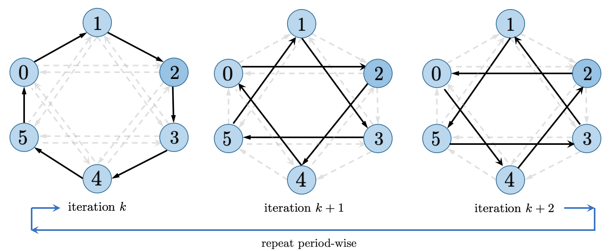

Static and Dynamic Topology Neighbor Averaging¶
The most distinguishable feature of Bluefog compared with other popular distributed training frameworks, such as DistributedDataParallel provided by pytorch, Horovod, BytePS, etc., is that our core implementation rooted on the idea that we introduce the virtual topology into the multiple processes and use the neighbor_allreduce as basic operation instead of allreduce.
The core idea is very simple: all nodes/processes are connected through a virtual topology and they fetch the information from their direct neighbors only, then do the average reduce operation. Although the concept is simple, there are lots of deep research and theorems built upon it. Here we just touch the most simple case to understand the basics. But let’s run some code snippet to gain some insights first:
BlueFog Code for Static and Dynamic Topology¶
The BlueFog APIs are designed for easy use of the static and dynamic topology. For simple static topology usage:
import torch
import bluefog.torch as bf
from bluefog.common import topology_util
bf.init() # Default topology is Exponential-2 graph
bf.set_topology(topology_util.RingGraph(bf.size())) # change to ring graph.
x = torch.Tensor([bf.rank()])
for _ in range(100):
x = bf.neighbor_allreduce(x) # Use previous set ring graph.
print("rank {} has x={}".format(bf.rank(), x))
For dynamic topology case, especially dynamic Exponential 2 graph as we recommended for most cases, you need a little bit more code:
{kind=link}
import torch
import bluefog.torch as bf
from bluefog.common import topology_util
bf.init()
# Since Default topology is Exponential-2, the following utility function
# will generate one-peer dynamic Exponential-2 topology.
dynamic_neighbors = topology_util.GetDynamicSendRecvRanks(
bf.load_topology(), bf.rank())
x = torch.Tensor([bf.rank()])
for _ in range(maxite):
to_neighbors, from_neighbors = next(dynamic_neighbors)
avg_weight = 1/(len(from_neighbors) + 1)
x = bf.neighbor_allreduce(x, name='x',
self_weight=avg_weight,
neighbor_weights={r: avg_weight for r in from_neighbors},
send_neighbors=to_neighbors)
Notice here we use extra argument in the neighbor_allreduce function to change its behavior.
Although here we use the pre-defined utility function, you can implementation your own dynamic topology
function easily because all information it returns is just ranks (integers).
Last note is hierarchical_neighbor_allreduce is defined over machine topology instead of previous
rank/processes topology. The usage is similar by just chaning rank integers into machine integers.
Basic Theorem¶
Formally, consider a digraph \(G=(V,E)\), where \(|V|=n\), and weight matrix \(W\) defined on \(G\), that is, \(w_{ij}\neq 0\) only for \((j,i)\in E\) and \(j=i\). Neighbor average of vector \(x_1,\dots,x_n\) defined over graph \(G\) is equivalent to the matrix multiplication:
Theorem: The sequence \(\mathbf{x}^{(k)} = W\mathbf{x}^{(k-1)}\) converges to \(\mathbf{x}^\star=\frac{1}{n}\left(x_1+\dots+x_n\right)\) for all \(\mathbf{x}\) if
\(W^{(k)}\mathbf{1} = \mathbf{1}\),
\(\mathbf{1}^T W^{(k)}=\mathbf{1}^T\),
\(W\) has eigenvalues: \(\lambda_1=1 > |\lambda_2| \ge \dots \ge |\lambda_n| > -1\).
Also, \(\|\mathbf{x}^{(k)}-\mathbf{x}^\star\|_2\le \underbrace{\max(|\lambda_2|,|\lambda_n|)}_{=:\rho}\|\mathbf{x}-\mathbf{x}^\star\|_2\). Smaller \(\rho\) means faster convergence.
For dynamic topology, the combination matrix should change to \(W^{(k)}\) and the convergence condition becomes more complicated but similar. You can refer our papers to see more theoratical guarantee.